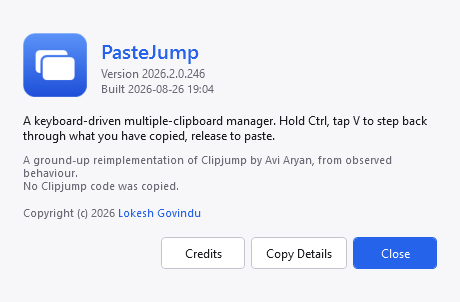
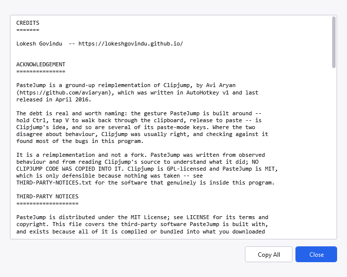

Limits and omissions
What PasteJump cannot do, and what it deliberately does not do.
Known limits
- Elevated windows. A non-elevated keyboard hook cannot see keystrokes in windows running as
administrator, so the gesture does not work in them. Running PasteJump itself elevated via a scheduled
task fixes it, at the cost of arranging that once.
- Security software can hide one application's keyboard from PasteJump entirely. On a managed
machine, data-loss-prevention policy can route one application's keyboard input — a browser, usually
— through a component with more privilege than PasteJump, and Windows then hides that input from
PasteJump's hook by design. Ctrl+V does nothing in that one application while working everywhere else.
Ticking Always Run as Administrator in the tray menu is the fix; see
Troubleshooting.
- A copy can be lost under heavy clipboard contention. The clipboard is a machine-wide lock;
PasteJump retries with backoff and then twice more on a delay, but a process that holds it longer than
that wins. Inherent to the Win32 clipboard.
- An image's reported size is larger than the file it came from, and correctly so — the
clipboard hands over raw pixels. See Troubleshooting.
- Full-text search only reaches as far as the stored preview. Longer text is archived in full and
comes back intact when copied, but is not searchable past the cap. Raise Characters Kept per Entry
if that matters to you; it applies to new captures.
- File names past the preview cap are not searchable either, and a file list stores no full-text
archive the way long text does.
- Windows on ARM needs a separate build; only 64-bit Intel/AMD is published today.
- The application icon is a generated placeholder, drawn by a script rather than designed.
Not implemented, on purpose
Clipjump had these. They were audited and dropped rather than missed:
- Channels — multiple independent clipboard stacks — and the Channel Organizer.
Consequently
PitSwap does not exist and the X cycle has no Move or Copy stages,
since those moved clips between channels. Clipjump's Up and Down were channel
keys; with channels gone they were free, and here they step through clips instead.
- The plugin system and its public messaging API. Replaced by five built-in paste formats.
- Localisation. English only.
- Action Mode, copy-file-path, hold-clip, one-time-stop and incognito. A per-process ignore list
covers the case that actually matters — see Settings, Excluded Apps.
- Three Clipjump settings with no counterpart here: its store-compaction batch size, replaced
wholesale by SQLite; its thumbnail quality, which does not apply because previews are rendered on demand
from the original image; and its memory-flush and process-priority knobs, the first of which is a
well-known anti-pattern that makes an application slower.
Version

Right-click the tray icon and choose About. Copy Details puts the version, the build stamp and
the environment on the clipboard, which is what to paste into a bug report. Credits opens the credits
and the third-party notices — what PasteJump is made of, and the licences that travel with it.

Credits, with the third-party notices the build embeds.
The number reads year.release.0.build. The last part counts changes to the source, so it
climbs by more than one between releases and is the part worth quoting when two copies of the same release
behave differently.
Credit
The interaction design is Avi Aryan's. Clipjump is an excellent AutoHotkey v1 utility whose last
release was in 2016; PasteJump is an independent reimplementation of its observed behaviour and carries
none of its code.
PasteJump is MIT-licensed. Copyright © 2026 Lokesh Govindu.